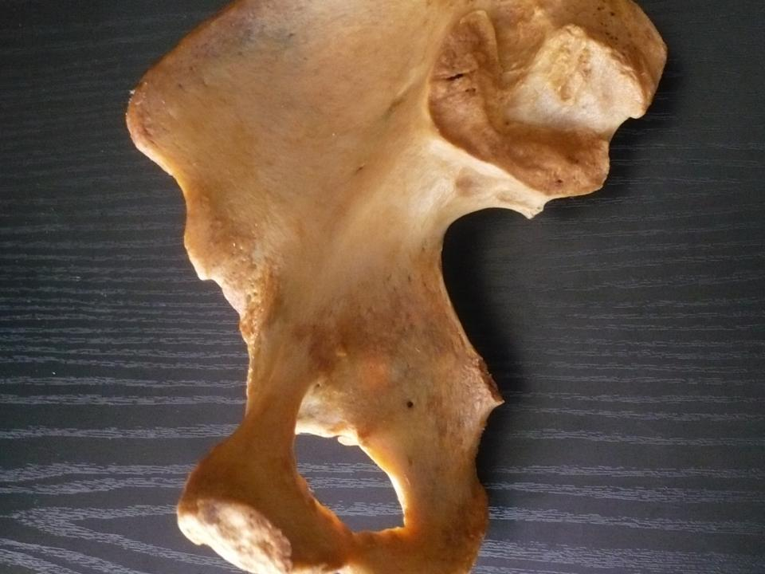

Página 10 · Parte A · Paredes
Espinha e tuberosidade: o par mais trocado da bacia
Um enunciado diz 'diâmetro bi-isquiático'. Você já sabe que existem duas saliências do ísquio, com medidas diferentes. Qual das duas ele quer — 10,5 ou 11 cm? A resposta não está na palavra: está em qual estreito o enunciado estava discutindo.
Duas saliências do mesmo osso, e elas não se parecem
As duas nascem do ísquio, o osso de trás e de baixo do quadril. E aí termina a semelhança.
A espinha isquiática é pontiaguda e fina, projetada para dentro e para trás, na face interna do osso, mais acima, na altura do meio do canal. Nela se prendem três coisas que importam: o ligamento sacroespinhal, que sai dela e vai ao sacro; o arco tendíneo da fáscia pélvica, que é de onde parte a fáscia que envolve as vísceras; e parte do levantador do ânus. Ou seja: a espinha ancora chão e cordas ao mesmo tempo — é um ponto de fixação, além de ser uma referência de medida.
A tuberosidade isquiática é o oposto em quase tudo: é um espessamento rombo, grosso e rugoso da porção ínfero-posterior do corpo do ísquio, situado abaixo e atrás da espinha, já na saída. É o osso em que se senta — na posição sentada, o peso do tronco descarrega nas duas tuberosidades. Nela se prendem o ligamento sacrotuberal e os músculos isquiotibiais, que descem para a parte de trás da coxa.
Fixe pelo contraste tátil, porque é o que não se esquece: a espinha é um bico que se acha por dentro; a tuberosidade é um bloco que se acha por fora.
Ache a espinha em você
Vale repetir o roteiro tátil, porque a espinha é a estrutura mais usada da bacia e a mais difícil de imaginar. Ao toque vaginal, com o dedo indicador dentro e apontando para o lado, na altura de mais ou menos metade do canal, sente-se de cada lado uma saliência dura e pontuda que aparece de repente numa parede lisa. Ela é discreta — quem procura um bico grande não acha nada e conclui que está no lugar errado. O confirmador: ao lado dela, indo para trás, sente-se uma corda tensa — o ligamento sacroespinhal, que sai da espinha em direção ao sacro. Achou a corda, achou a espinha.
A tuberosidade não precisa de roteiro: ela se acha por fora, na prega glútea, e é o relevo em que o corpo apoia quando a pessoa se senta numa superfície dura.
As quatro coisas para que a espinha serve
Quatro usos, todos cobráveis, e todos derivam da mesma propriedade — ela projeta para dentro, no meio do canal:
1. É o zero da régua de descida fetal. O plano que passa pelas duas espinhas é o marco a partir do qual se conta a altura da apresentação. 2. É o limite lateral do estreito médio, e portanto a extremidade do diâmetro biespinhal, de cerca de 10,5 cm — o menor diâmetro da pelve. 3. É a referência do bloqueio do nervo pudendo. A agulha é dirigida medial e inferiormente à espinha, que é onde o pudendo contorna o ligamento sacroespinhal. 4. Serve à avaliação da bacia: espinhas proeminentes, sentidas com facilidade ao toque, sugerem estreitamento do plano médio — o achado típico da bacia androide.
E agora a costura que amarra o conteúdo inteiro, e que quase nunca é dita: o biespinhal, entre as duas espinhas, é o menor diâmetro da pelve. E é exatamente a linha que liga essas duas espinhas que serve de zero da régua de descida. Não é coincidência: marcou-se o zero no ponto mais apertado do caminho. Chegar ali é ter passado pelo pior pedaço — e é por isso que atingir o plano zero é um marco clínico, e não apenas uma leitura de posição.
A armadilha do "bi-isquiático"
A palavra bi-isquiático é usada para duas medidas diferentes, e é aí que o ponto se perde:
- no estreito médio, "bi-isquiático" significa biespinhal, entre as espinhas isquiáticas — 10,5 cm; - no estreito inferior, "bi-isquiático" significa bituberoso, entre as tuberosidades isquiáticas — 11 cm.
A regra de desempate é curta e resolve sempre: se o enunciado disser "bi-isquiático", olhe qual estreito ele está discutindo. Espinha é meio, tuberosidade é saída.

Mesmo enquadramento sem pistas: bico da espinha e bloco da tuberosidade.
Anatomist90 / asset local de produção A12 (ver proveniência p10). Uso educacional.
Quiz — fixação
Um enunciado descreve a avaliação do diâmetro bi-isquiático no estreito inferior. A que medida ele se refere, e qual é o valor de referência?
- Gabarito B. O termo "bi-isquiático" é ambíguo por construção — as duas saliências pertencem ao mesmo osso —, e o desempate está sempre no estreito citado: espinha é meio, tuberosidade é saída. Como o enunciado diz estreito inferior, a medida é entre as tuberosidades: o bituberoso, ≈ 11 cm.
- (A) é a leitura correta do mesmo termo no outro estreito: seria o gabarito se o enunciado dissesse "plano médio".
- (C) é ântero-posterior, não transverso, e pertence à entrada — troca dois atributos de uma vez.
- (D) é o transverso da entrada, o maior diâmetro da pelve, e é justamente o oposto de uma medida de saída.
- Por que cair na (A): o biespinhal é a medida mais citada de todas, por causa do zero da descida, e vira resposta reflexa para qualquer coisa "isquiática". A defesa é mecânica: antes de responder, localize o estreito no enunciado.
Por que o plano das espinhas isquiáticas foi escolhido como o zero da régua de altura da apresentação?
- Gabarito C. A escolha do zero não é arbitrária: as espinhas são as extremidades do biespinhal, ≈ 10,5 cm, o menor diâmetro da pelve inteira. Marcar o zero ali significa marcar o ponto em que o canal mais aperta — e por isso atingir o plano zero é um marco clínico, não uma leitura qualquer: significa ter passado pelo pior pedaço.
- (A) é aproximadamente verdadeira como descrição de posição e completamente insuficiente como justificativa: ser o meio não daria nenhum significado clínico ao marco.
- (B) é falsa — o promontório e o cóccix também são acessíveis ao toque, e o próprio arco púbico é avaliável.
- (D) associa ao plano um evento da mecânica do parto: a rotação de fato ocorre na descida, mas o zero foi definido por geometria óssea, não por movimento fetal, e nem toda rotação acontece exatamente nesse plano.
- Por que cair na (A): "zero no meio" tem uma simetria que parece explicação suficiente. Só que o que dá sentido ao zero é ele coincidir com o gargalo — e é essa coincidência que transforma uma convenção numérica em informação prognóstica.